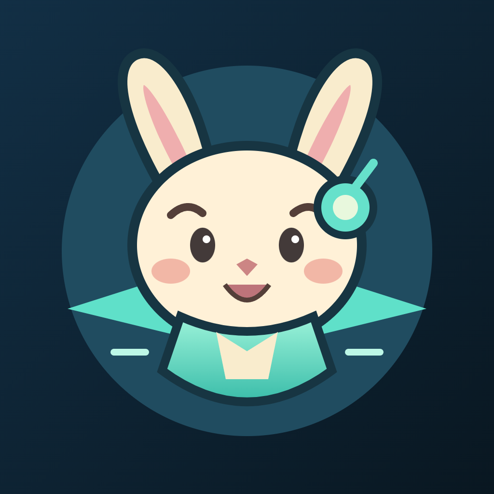
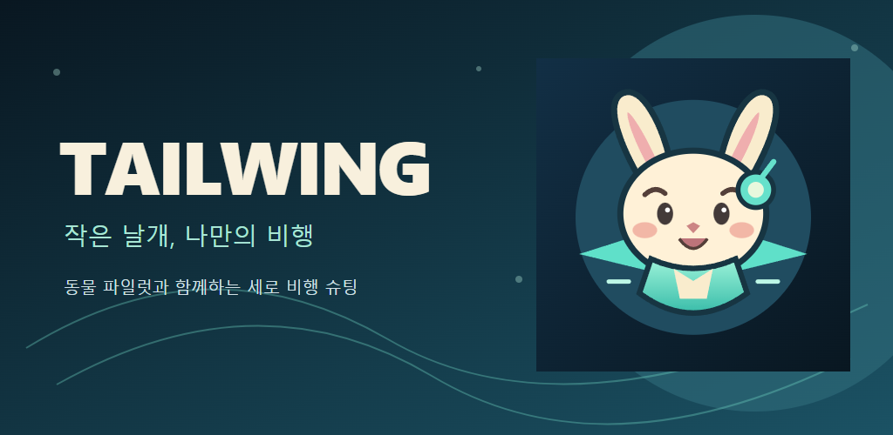
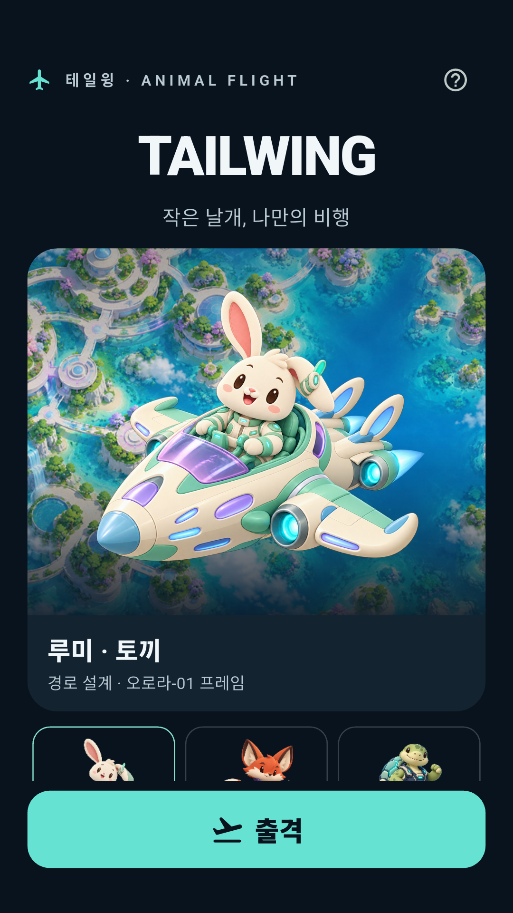
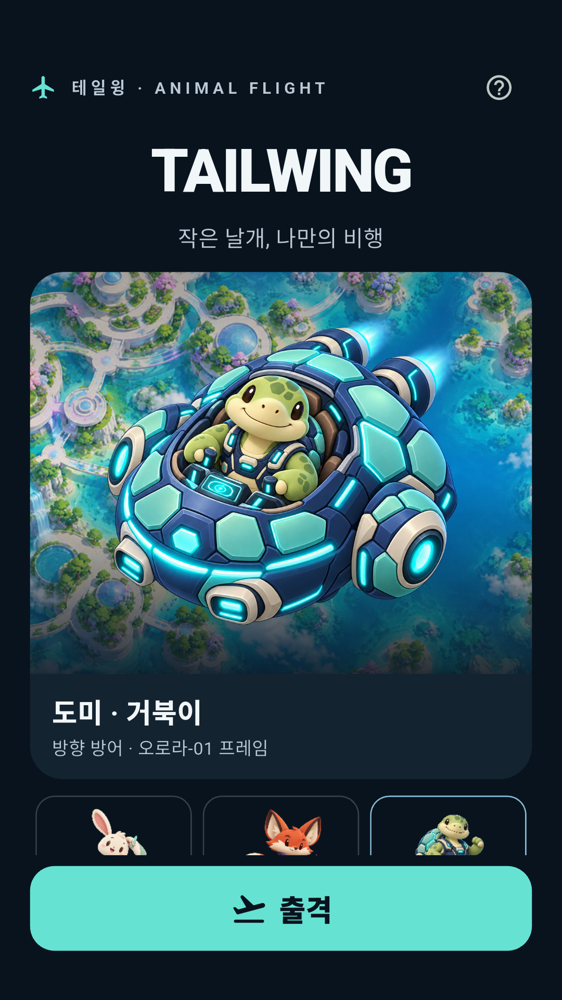

로컬·미배포 검토 초안 · 출시/제출 준비 미완료 · 웹 공개/문의 접수/계정 삭제 기능 없음
테일윙 · 출시 자료와 계속 편집
12단계의 가능한 로컬 자료를 정리했습니다. 현재 상태는 제출 보류 / 13단계 계속 편집입니다. 서명 AAB·Archive/IPA와 현재 릴리즈의 실행/로그인 콜백은 미검증입니다.
플랫폼/서명/공개 설정 대기 · 검증 소스와 SHA · 자료 해시/규격 · 직접 빌드/검사 · 직접 스토어 확인표 · 소개 후보 · 계속 편집 방법
편집 가능한 브랜드 후보
아래는 새로 작성한 SVG 기반 검토 후보입니다. 기존 캐릭터 그림을 대체하거나 네이티브 앱 아이콘에 설치하지 않았습니다. 최종 선택·작은 크기/런처/iOS 마스크 검증 전 제출하지 않습니다. 기존 native 아이콘은 이전 항공기 그림이므로 테일윙 방향과 맞추는 후속 교체가 필요합니다.
SVG 편집 원본 · Play 512 후보
iOS 1024 후보 · native 미적용 
배너 SVG 원본 · 실제 게임 화면을 가장한 그림이 아닙니다.
가상 데이터로 촬영했던 실제 Android 화면
2026-10-30 debug 가상 기기의 과거 Flutter 렌더링입니다. 현재 서명 릴리즈의 새 캡처가 아닙니다. 최종 그래픽/서명 빌드 확정 뒤 다시 촬영해야 합니다. Android 화면을 iOS 자료로 바꾸지 않습니다.

무료 토끼 홈
무료 거북이 홈 무료 3종·구독 잠금 선택 카드
무료 3종·구독 잠금 선택 카드 검사용 가상 구독 기술: 접이식 갑판. 무료 기본 보호막과 별개
검사용 가상 구독 기술: 접이식 갑판. 무료 기본 보호막과 별개촬영 일자·규격·출처·권한 조건. 그래픽·기술/기능 수정 후 이 자료를 현재 화면으로 재사용하지 않습니다.